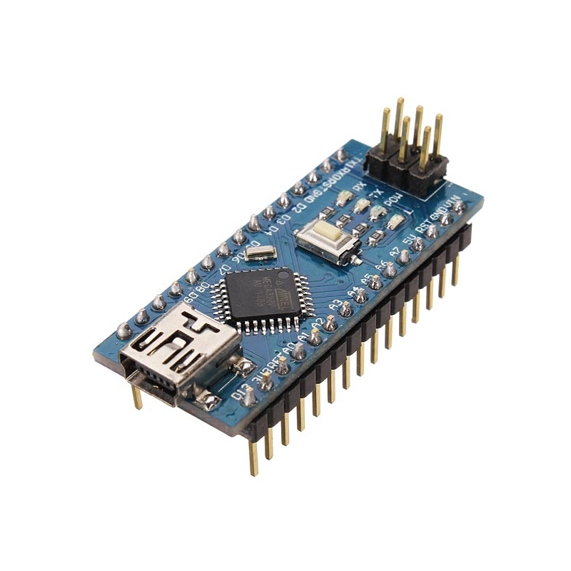

El Arduino Nano es un tablero pequeño, completo y fácil de usar basado en el ATmega328P (Arduino Nano 3.x). Tiene más o menos la misma funcionalidad del Arduino Duemilanove, pero en un paquete diferente. Le falta solo un conector de alimentación de CC, y funciona con un cable USB Mini-B en lugar de uno estándar.
Arduino es una plataforma de código abierto que combina hardware y software fácil de manejar para construir proyectos electrónicos.
¿Qué se puede hacer con el Arduino Nano?
- Prototipado Electrónico: Al igual que otras placas Arduino, el Nano es ideal para crear prototipos electrónicos de tus ideas antes de desarrollar un producto final. Puedes conectar sensores, actuadores y otros componentes para probar conceptos y funciones.
- Automatización del Hogar: Utiliza el Arduino Nano para crear sistemas de automatización en el hogar, como controlar luces, ventiladores, persianas o sistemas de riego de manera automatizada o a través de una aplicación móvil.
- Robótica: Puedes construir robots pequeños y robots controlados por Arduino utilizando el Nano. Controla motores, sensores y otros componentes para lograr movimientos y comportamientos específicos.
- Instrumentos Musicales Electrónicos: Si eres un entusiasta de la música, puedes usar el Arduino Nano para crear instrumentos musicales electrónicos personalizados o controladores MIDI.
- Monitoreo y Adquisición de Datos: Utiliza el Nano para recopilar datos de sensores, como temperatura, humedad, luz, movimiento, etc. Estos datos pueden ser registrados y visualizados en una computadora o transmitidos a través de una conexión inalámbrica.
- Internet de las Cosas (IoT): Agrega módulos Wi-Fi o Bluetooth al Nano para crear dispositivos IoT que se puedan conectar a la red y controlar de forma remota a través de una aplicación móvil o una página web.
- Control de Pantallas: Puedes conectar pantallas OLED, LCD o LED al Arduino Nano para mostrar información o crear proyectos de visualización de datos.
- Proyectos de Iluminación: Controla tiras de LED RGB, lámparas o sistemas de iluminación personalizados utilizando el Nano para crear efectos de iluminación dinámicos y creativos.
- Educación: El Arduino Nano es una excelente herramienta para enseñar conceptos de electrónica y programación en entornos educativos. Su tamaño compacto lo hace fácil de usar en aulas.
- Ciencia Ciudadana: Utiliza el Nano para proyectos de ciencia ciudadana, como la recopilación de datos ambientales, la medición de la calidad del aire o el monitoreo de variables científicas específicas.
En resumen, el Arduino Nano es una placa microcontroladora versátil y popular que es ampliamente utilizada por entusiastas, estudiantes, diseñadores y desarrolladores para crear una variedad de proyectos electrónicos y sistemas interactivos. Su tamaño compacto lo hace especialmente útil en proyectos donde el espacio es limitado.